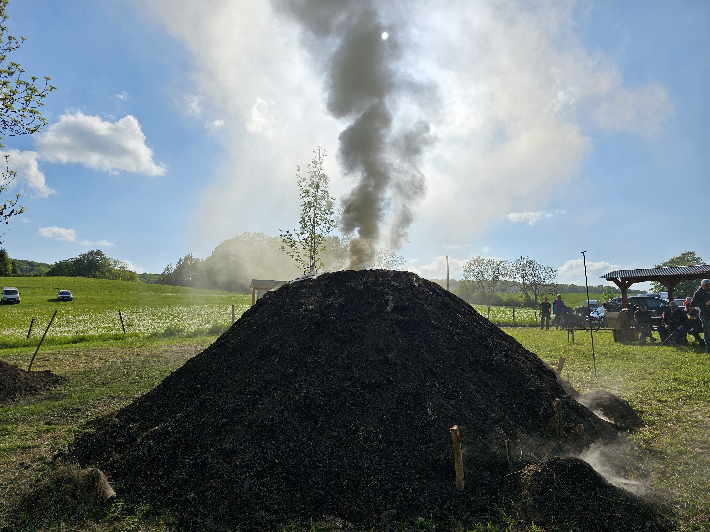
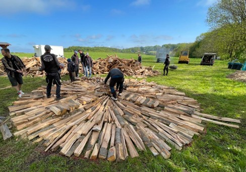
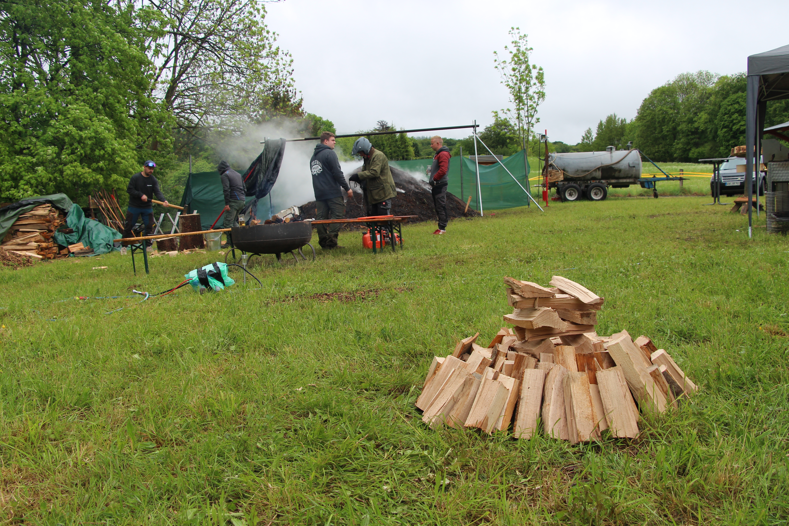

Foto: Der fertige Kittelsthaler Meiler mit aufsteigendem Rauch
hero-meiler.jpgDas Köhlerhandwerk
Der Kittelsthaler Meiler
Das traditionelle Köhlerhandwerk in Westthüringen gehört seit 2014 zum immateriellen Kulturerbe in Deutschland. Hier erfährst du Schritt für Schritt, wie auf der Kohlstelle ein traditioneller Meiler entsteht und wie aus Buchenholz reine Holzkohle wird.
Die traditionelle Köhlergrußformel: Sie wird beim feierlichen Anzünden des Meilers als Segenswunsch unter Köhlern gerufen und dient zugleich als herzliche Begrüßung am Meilerplatz.
Der Meiler auf einen Blick
Jahrhundertealtes Erfahrungswissen, Naturgesetze und reine Handarbeit: Die zentralen Kennzahlen des Kittelsthaler Meilers.
Buche und Eiche sind seit Jahrhunderten die wichtigsten Hölzer – dank hoher Dichte, Festigkeit und hohem Kohlenstoffgehalt.
Der kreisrunde Grundriss des Kittelsthaler Meilers wird vor dem Aufbau präzise mit Farbe auf der Kohlstelle abgesteckt.
Alle zwei Jahre in der Himmelfahrtswoche erwacht das Köhlerbrauchtum in Kittelsthal für eine Woche zum Leben.
Mehrere Tage und Nächte dauert der Verkohlungsvorgang. Der Meiler wird dabei ohne Unterbrechung überwacht.
So stark schrumpft der Meiler im Laufe der Woche zusammen, während Wasser und Holzgase entweichen.
Kann ein traditioneller Meiler je nach Baugröße fassen – aufgeschichtet in dichtester Handarbeit.
Einfach erklärt: Was genau ist eigentlich ein Meiler?
Ein Meiler ist ein luftdicht abgedeckter Holzstapel. Das Geheimnis des Köhlers: Das Holz verbrennt darin nicht wie in einem Lagerfeuer, sondern wird unter Luftmangel sehr stark erhitzt. Dabei dampfen Wasser und Holzgase ab, und das feste Holz verwandelt sich langsam in echte, tiefschwarze Holzkohle. Fachleute nennen diesen Prozess Verkohlung oder Verschwelung.
Der interaktive Meileraufbau
57 % unserer Besucher interessieren sich ganz besonders für den Aufbau. Erkunde hier die 9 Arbeitsschritte, den inneren Aufbau und die Geheimnisse des Meilerfeuers.

Foto: Der mit pinker Sprühfarbe markierte Grundriss auf der Kohlstelle
aufbau-01-grundriss.jpgGrundriss abstecken
Auf der Kohlstelle (dem Meilerplatz) werden der Grundriss mit 6 m Durchmesser sowie die Positionen der Lüftungsschächte und des Quantelschachtes mit pinker Sprühfarbe markiert. So behalten die Köhler beim Aufbau die runde Form bei.
Der Quantelschacht
Der quadratische Zentralkamin aus ca. 20 cm kurzen Buchenholzscheiten. Er wächst bis auf 2,5 m Höhe und wird beim Anzünden mit Füchsen, Holzkohle und Glut befüllt. Durch ihn zieht das Feuer von oben nach unten.
Punkte direkt anwählen:
Was der Rauch verrät
Wähle eine Rauchfarbe:
Blauer, harzig riechender Rauch
Die Kohle ist an dieser Stelle weitgehend fertig verkohlt! Der Köhler weiß nun: Diese Pfeife kann verschlossen und 15 bis 20 cm weiter unten ein neues Luftloch gestochen werden.
Wichtige Begriffe einfach erklärt
Die Fachsprache der Köhler hat sich über viele Jahrhunderte entwickelt. Hier findest du die wichtigsten Grundlagen auf einen Blick.
Die Geschichte des Köhlerhandwerks
Von den ersten gehärteten Holzspeeren der Altsteinzeit über die Bronzezeit und die Entstehung der Nachhaltigkeit bis zum immateriellen Kulturerbe der Gegenwart.
Der Kittelsthaler Meiler e. V.
Wie engagierte Familien und ein erfahrener Ruhlaer Berufsköhler das fast ausgestorbene Brauchtum in Westthüringen für kommende Generationen gerettet haben.
Erster Meiler am Kalkteich durch Jürgen von Roda und 7 befreundete Familien. Das Wissen gab ein Ruhlaer Berufsköhler mündlich weiter.
Zum vorerst letzten Mal wird auf traditionelle Weise geköhlert, bevor eine längere Ruhepause eintrat.
Gründung des Vereins „Kittelsthaler Meiler e. V.“ und erfolgreiche Wiederbelebung des traditionsreichen Handwerks.
Offizielle Aufnahme des Kittelsthaler Meiler e. V. als Mitglied im Europäischen Köhlerverband.
31 aktive Mitglieder aller Altersgruppen errichten alle zwei Jahre in der Himmelfahrtswoche gemeinsam den Meiler.

Foto: Schulklasse beim Lernen und Bau eines Mini-Meilers im Freien
unterricht-im-freien.jpgUnterricht im Freien
Schulklassen aus der Region besuchen den Meilerplatz und verbinden ihren Wandertag mit einem lebendigen Geschichts- und Naturwissenschaftsunterricht.
Das Handwerk wird direkt erlebbar: Die Schüler helfen beim Bau eines Mini-Meilers mit, schichten Scheite auf und können echte, frisch gebrannte Holzkohle anfassen.
Komm vorbei zum Kittelsthaler Meilerfest
Alle zwei Jahre in der Himmelfahrtswoche in Kittelsthal (Ruhla)
Erlebe das feierliche Anzünden hautnah, spüre die Hitze der Kohlstelle, lausche dem traditionellen Gruß „Gut Brand!“ und nimm frisch gebrannte Holzkohle direkt vom Meiler mit nach Hause.
Über dieses Projekt
„Traditionelles Köhlerhandwerk in Westthüringen – Ein Konzept zur Bewahrung eines immateriellen Kulturerbes“
Diese Website entstand im Rahmen einer Seminarfacharbeit von Schülern. Sie ergänzt die Vermittlung vor Ort sowie die Vorträge am Meilerfest und wurde auf Basis eigener Recherchen, fotografischer Dokumentation und intensiver Gespräche mit den aktiven Köhlern des Kittelsthaler Meiler e. V. erarbeitet.
Die Website wird nach Abschluss der Arbeit an den Verein übergeben, damit dieser sie eigenständig pflegen und künftig mit neuen Fotos erweitern kann. Zudem dient sie auf einem Bildschirm in der Touristinformation Ruhla als interaktive Dauerausstellung.
Schule & Schuljahr:
[TODO: Schulname und Schuljahr eintragen.]Quellenhinweis & weiterführende Informationen:
Europäischer Köhlerverband e. V. sowie Dokumentationen des Kittelsthaler Meiler e. V.